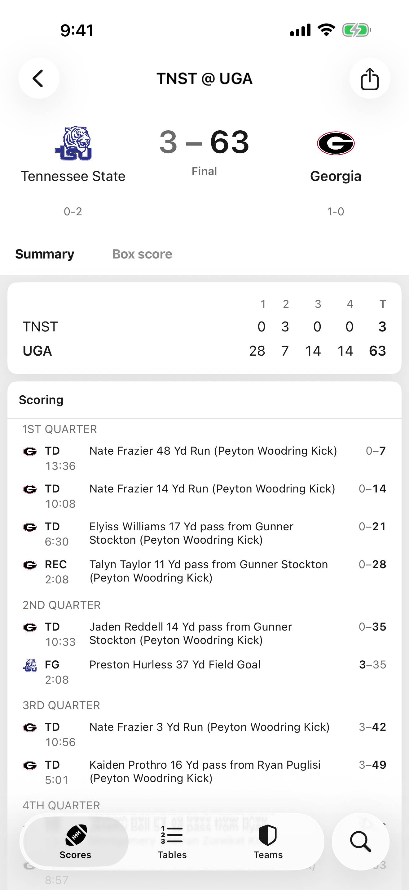
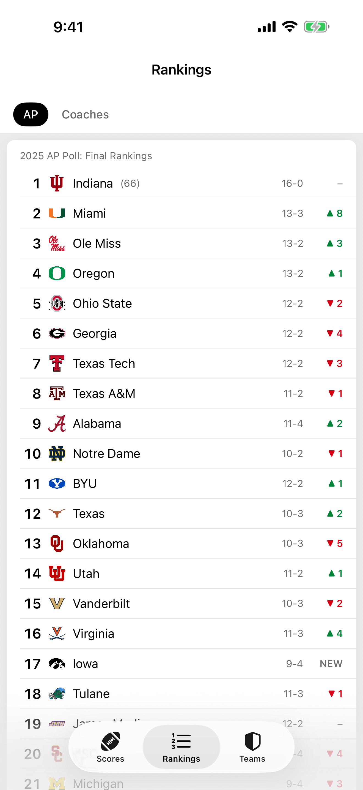

StatSide
Rankings and details
Polls, plays,
whole seasons.
whole seasons.
- AP Top 25 and Coaches Poll, with movement arrows
- Game pages — line score, scoring plays, drive log, stats
- Team pages — full season schedule and results
- Past seasons back to 2014

